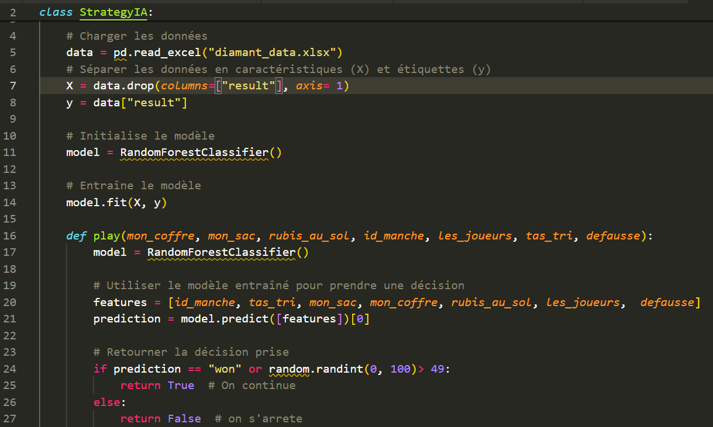
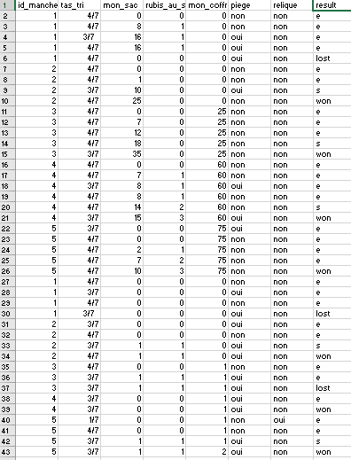
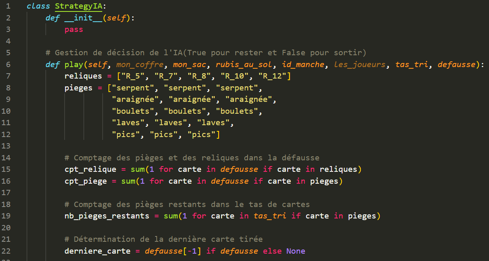
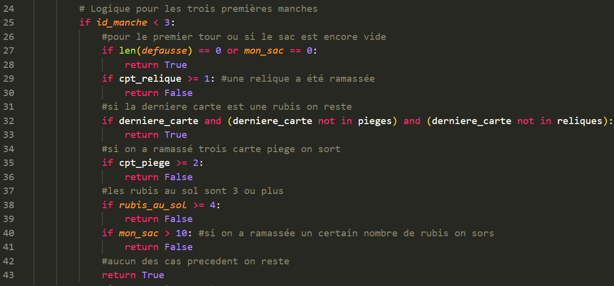
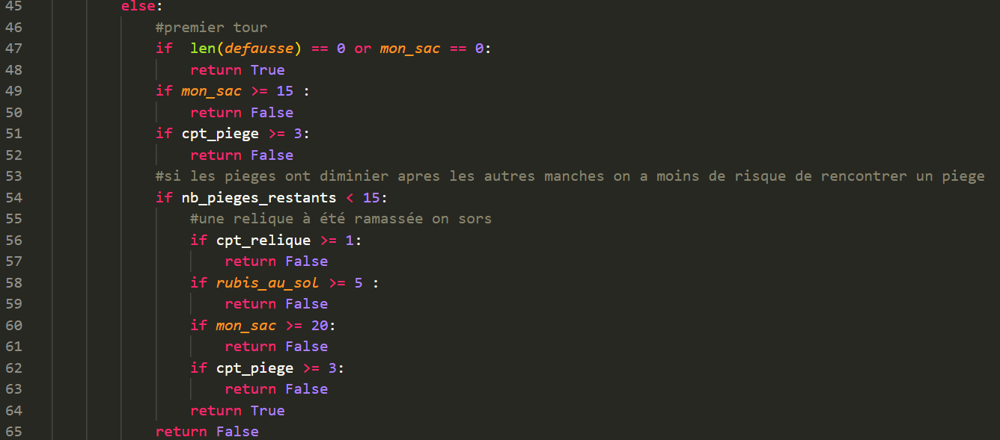

La première stratégie :
Nous avons au début pensé à faire la stratégie de notre IA uniquement basée sur l'aléatoire, mais comme on le sait, le hasard n'est pas souvent une bonne chose, alors on a vite oublié cette idée. Après un peu de réflexion, nous avons décidé de passer par l'apprentissage automatique, tenté d'utiliser sklearn et pandas afin de faire en sorte que l'IA puisse s'adapter au joueur.
La deuxième stratégie :
Durant les deux premières semaines, nous nous sommes concentrés sur l'utilisation de sklearn et de pandas. À l'aide de quelques vidéos YouTube, notamment celle de Machine learnia , ce qui nous a beaucoup servi afin de comprendre et d'appliquer les méthodes et les exercices nécessaires pour réussir.
Cependant, une erreur difficile est survenue lors de l'exécution du code, une erreur qui persista durant plusieurs jours.
D'abord, il faut comprendre les deux modules utilisés lors de cette stratégie avant de montrer le bout de code et l'erreur
en question.
pandas est un outil d'analyse et de manipulation de données open source rapide, puissant, flexible et facile
à utiliser, construit à partir du langage de programmation Python, et Scikit-learn (ou sklearn en raccourci)
est une bibliothèque pour l'apprentissage automatique (Machine Learning) et l'exploration de données basés sur Python.

Le but du bout de code ci-dessus pour but d'utiliser des données afin d'alimenter l'outil d'analyse pour qu'il soit capable de s'adapter en fonction de la situation, puis d'initialiser le modèle en intégrant RandomForestClassifier() puis d'entraîner le modèle, afin qu'il soit capable de faire prédiction par la suite. Les données utilisées ont été réalisées sur Excel après plusieurs parties, en testant les probabilités d'apparitions des cartes, les manches et le résultat obtenu après chaque manche.

L'image ci-dessus est la photo des données initialement prévues d'être utilisées.
Cependant, un bug important surgi, en fait ce qu'il se passe, c'est qu'à l'aide de pandas, on récupère le fichier Excel que l'on intègre à la variable "data" (ligne 5) puis la variable "x" (ligne 7) comporte la suppression de la colonne "Result" afin qu'il soit réutiliser par la suite, mais la colonne "Result" est introuvable, ce qui le reste des processus impossible à finir. Nous avons tenté différentes méthodes telles que changer les données du fichier Excel et modifier le code, mais rien n'y fait, on se devait de changer de stratégie.
La troisième stratégie :
Le but de la troisième stratégie est de se concentrer sur un aspect plus déterminisme, après quelques tests personnels, nous avions remarqué qu'il fallait se concentrer sur les gains potentielles que l'IA pourrait gagner, faire prendre plus de risques, et sortir du jeu lorsque les chances de retomber sur une autre carte pièges augmenté.
Notre stratégie est donc composés de trois parties.
La première partie :

Les cartes existantes sont définies en fonction du nombre de cartes pièges restantes, des reliques et de la dernière carte sortie. Cela nous permettra de prendre une décision éclairée quant à la suite.
La deuxième partie :

Pour cette deuxième partie de la stratégie, nous nous concentrons sur les deux premières manches. Tout le long, l'IA retourne vrai (donc continue) dès le début, l'IA ne sort que lorsqu'il y a une relique, lorsqu'il y a plus de deux cartes pièges tirées ou plus de quatre rubis au sol, cela s'explique, car dans les premières parties, les gains amassés ne sont généralement pas nombreux, les reliques sont très rares ce qui, certes est très dangereux comme méthode, mais cela fait partie de l'essence même de notre stratégie, la prise de risque , tout en étant, tout de même craintif de retomber sur une troisième cartes pièges qui pourrait faire prendre beaucoup de gains, sinon l'IA continue la dernière carte sortie n'est ni une carte piège ni une relique.
Généralement, les deux premières manches rapportent d'assez gros gains, ça nous permet de prendre encore plus de risque pour les trois dernières.
La troisième partie :

En ce qui concerne cette dernière partie, c'est globalement la même stratégie que précédemment présentée. Cependant, le taux de prise de risque augmente, l'IA reste plus longtemps dans les manches restantes, et s'il y a trop de gains, l'IA sort de la manche afin de ne pas perdre tous les gains accumulés. Les avantages dans notre stratégie hormis le fait qu'il fonctionne, est que l'optimisation des gains et l'utilisation des informations de jeu en temps réel pour ajuster les décisions, et les inconvénients sont le manque d'expérience l'IA ne s'améliore pas avec l'expérience, la Prévisibilité et le manque d'aléatoire dans l'algorithme.